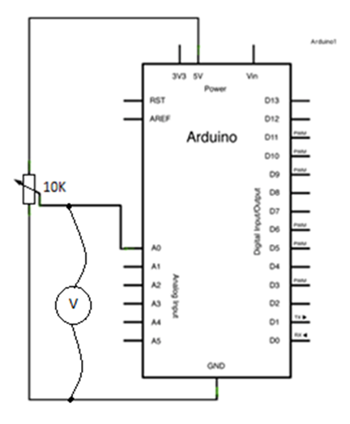
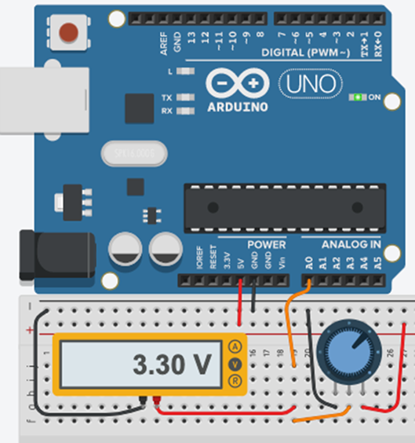
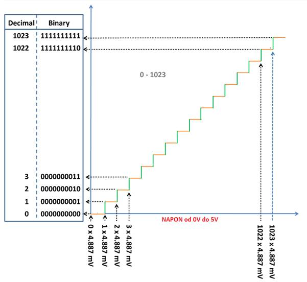
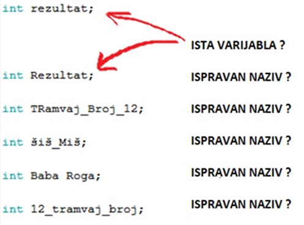

VJ2-Izrada jednostavnog Voltmetra
2.1 Analogni ulazi
Arduino ima mogućnost čitanja vrijednosti analognog napon na analognom pinu. Pročitani napon od 0V do 5V konvertira uz pomoću funkcije
analogRead() u cjelobrojne vrijednosti od 0 do 1023.
To su 1024 broja. ( NULA JE BROJ ).
Konvertirane vrijednosti ćemo ispisivati u SERIJSKOM MONITORU.
Potenciometar koristimo kao naponski djelitelj od 0V do 5V.
Električna shema

Montažna shema

Upišite sljedeći program.
void setup() {
Serial.begin(9600);
}
void loop() {
int potNapon = analogRead(A0);
Serial.println(potNapon);
delay(30);
}
Ugađanjem potenciometra brojevi se u SERIJSKOM MONITORU mijenjaju. U kojem rasponu ?
UPIŠITE VRIJEDNOSTI. min_________ max_________
2.2 Izrada jednostavnog Voltmetra
ADC je analogno digitalni konverter te se koristi na zvučnoj kartici kao ulaz za mikrofon dok je DAC digitalno analogni konverter te se koristi kao izlaz za zvučnike. ADC i DAC se koriste i u ostalim uređajima kao što su mobiteli, tableti, televizori, glazbene linije, perilice, alarmi, bojleri, termostati itd.
Arduino UNO ima 10 bitni ADC jer je 210 = 1024 - 1. (DAC nema.)
Da bi smo u SERIJSKOM MONITORU prikazali točnu vrijednost napona na analognom pinu A0 koristit ćemo matematički izračun.
Već znamo da se raspon napona 0-5V konvertira u cjelobrojne vrijednosti raspona 0-1023.
Podijelimo max vrijednost napona na 1023 dijela.
5V/1023 = 0.004887V
Evidentno je da se konvertirani brojevi mijenjaju po koracima od 0.004887V tj. 4,887 mV .
Vizualni prikaz rada ADC-a.

Ubacimo računicu u prijašnji program.
Upišite sljedeći program.
void setup() {
Serial.begin(9600);
}
void loop() {
float potNapon = 0.004887 * analogRead(A0);
Serial.print("VRIJEDNOST NAPONA JE : ");
Serial.print(potNapon);
Serial.println(" V");
delay(30);
}
Ugađanjem potenciometra napon se mijenja. U kojem rasponu ?
UPIŠITE VRIJEDNOSTI. min______ max_____
2.3 Varijable
potNapon je varijabla !!!!
Varijable koristimo u programiranju za pohranu neke vrijednosti koja se može mijenjati tijekom trajanja programa.
Za pohranu vrijednosti varijable koristimo memoriju, a varijabli dodjeljujemo proizvoljno simboličko ime koje nam omogućuje pristup (poziv) varijabli u programu.
Primjer upotrebe varijable je program koji prikazuje rezultat na sportskoj utakmici. Vrijednost koju varijabla sadrži (varijabla naziva rezultat) prikazivat će se na zaslonu dok se igra utakmica. Kako se rezultat povećava, vrijednost varijable se mijenja, a prikaz na zaslonu će se ažurirati i prikazati novu vrijednost.
Varijable nazivamo simboličkim imenom. Ako je spojena crvena LED dioda jednostavni naziv bio bi crvena. Ako upisujemo vrijednost temperature sa senzora naziv bi bio temp itd.
Prilikom određivanja simboličkog naziva varijabli poštujemo sljedeća pravila:
· Samo slova engleske abecede, brojevi i znak _ (podcrtavanje).
· U simboličkom imenu ne smije biti razmak.
· U simboličkom imenu ne smiju biti dijakritički znakovi (č,ć,ž,š,đ).
· U simboličkom imenu na prvom mjestu imena ne smije biti broj.
· U simboličkom imenu ne smijemo koristiti ključne riječi ili oznake operatora programskog jezika.
Programski jezik C/C++ razlikuje velika i mala slova.
Osnovni tipovi podataka
Osim simboličkog naziva svakoj varijabli moramo odrediti tip podatka.
Osnovni tipovi podataka su cijeli i realni brojevi, logički tipovi true-false (istina-laž) i znakovi.
https://www.arduino.cc/reference/en/#variables
Cijeli brojevi
Oznaka je int (engl. integer) u opsegu brojeva od -32.768 do 32.767
primjer: int rezultat;
Realni brojevi
Oznaka je float u opsegu brojeva od 3,4x10-38 do 3,4x1038
primjer: float temperatura;
Logički tipovi
Oznaka je bool , sadrži jednu od dvije vrijednosti, true ili false (istina ili laž)
primjer: bool tipkalo;
Znakovi
Oznaka je char , sadrži znak ili ASCII vrijednost znaka u opsegu brojeva od -128 do 127
primjer: char mojeSlovo;
Tip podatka bez vrijednosti
void je tip podatka koji ne sadrži vrijednost.
Primjer: void setup()
Primjeri: ( desna strana se pridružuje lijevoj !!! )
int a = 0; int b; int a = 4;
a = 3; b = 9; int c = 18:
c = a;
//var a je ?
//var b je ?
// koja je vrijednost var c ?
Objasnite NAZIVE VARIJABLI NA donjoj slici slici.

Serial.begin() ,konfigurira serijsku vezu između Arduina i računala
Sintaksa:Serial.begin (brzina)
Argumenti: brzina: brzina serijske veze u jedinici baudrate - bita u sekundi (Internet ?)
Serial.print() ili Serial.println() ,ispisuje zadano u zagradi u Serijski monitor
Sintaksa: Serial.print (zadano).
Argumenti: zadano : mogu biti znakovi ili neke brojevne vrijednosti
Napomena: dodatak ln (engl. line) - ispiši u novi redak
analogRead () je funkcija koja „čita“ napon na ulaznom analognom pinu te ga pomoću ADC-a pretvara u cijele brojeve.
Sintaksa: analogRead( (pin).
Argumenti: pin: broj analognog pina.
Napon od 0V do 5V è u cijele brojeve od 0 do 1023 To su 1024 broja. (0 je broj !!!)
10 bitni analogno digitalni konverter - ADC. ( 210 = 1024 -1 )
Funkcija analogRead() vrijedi kao i konvertirani broj, od 0 d0 1023. Zbog toga možemo reći da funkcija vraća vrijednost.
Takve funkcije pridružujemo varijabli operatorom pridruživanja =
Primjer:
VARIJABLA = analogRead (pin)